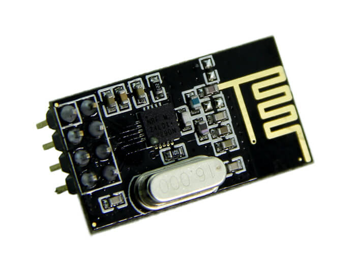
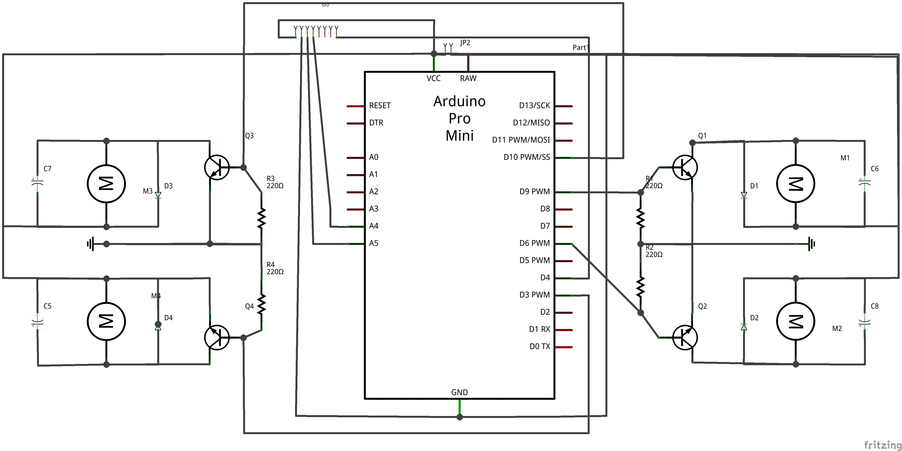
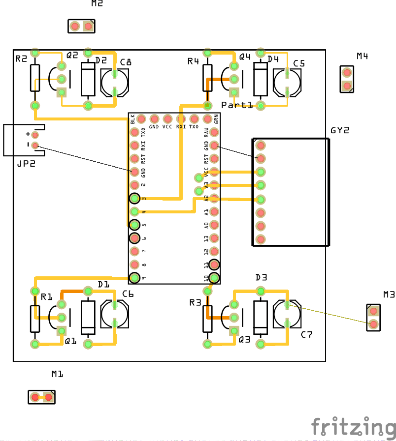

Njord Project
Build an awesome drone from scratch
Preparations
In the first article we explained the idea of our project. For the last time we have begun with concrete things, beginning by modeling the drone. With this second article we introduce the components we have chosen and the intended circuit.
Cost estimations
We started by investigate on state of the art about drones. You should notice that there are several kinds of flying drones. Some are small, others are bigger. Some robots are swift (quick and agile), or have an optimized flight for shooting while some drones have a hybrid flight, etc... For our application we rather need a hybrid one. We plan to draw the topography of an area, in order to do that we want to use an ultrasonic sensor which will measure the distance between the drone and what there is below. Then, we don't need to fly slowly, but the drone should not be too much quick in order to record as much information as possible. Moreover, due to practical reasons, it could be interesting to create a drone that doesn't need to be reloaded during an analyzes session.
Among existing drones, the Crazyflie from Bitcraze has interested us thank to its small size, also it's open source and you can easily buy components separately.

We decided to draw inspiration from this tiny drone. More specifically, ours has a size similar to the Bitcraze's one and it has the same battery, motor and blades but the remaining components are different. We don't want to use a real Crazyflie because our goal is to design a drone from scratch. Furthermore, this model doesn't really correspond to what we want to obtain. In all cases we should modify it.
At the beginning of this scholar year we attended to a seminar about Arduido language. We have discovered a language easy to use when you already know about languages as C. Then, we chose to use the Arduino technologies. Actually, the microcontroller is an Arduino Pro Mini. The main advantage of this component is its small size and its light weight, 18x33mm for 2g. Moreover, it provides an enough number of analogies and Pulse With Modulation (PWM) pins. However, we probably need to use a decoder to compensate for the lack of digital ones.

It's important to have a technology to help the drone to stabilize itself. The robot need to know, at all times, its angle of inclination. Then, we need a gyroscope. The huge catalog of Arduino's modules provides MPU-6050, a component that offers a gyroscope and an accelerometer.

For a while we wondered how we could know the drone's position in space. Obviously we thought to GPS, but precision of those technologies (if you want an affordable budget) is not precise enough. Of course, in the context of a drone which analyze outdoor and huge sized areas, GPS are interesting. But our robot will analyze only classroom. Then, a "meter scale precision" is too much larger. We rather need a "decimeter scale precision". Another solution has been evoked, create our own localization system by using triangulation with an antenna network. However, for financial reasons and weight reasons, this solution is not viable.
Actually, someone we know advised us to work with an accelerometer. This kind of component is a module which measures linear acceleration of a system. By knowing acceleration of our drone, we can determinate its speed and so it moves in space. Then, we decide to realize this option.
As we explained in the first article, the system has to communicate with a server. So, we have chosen a technology to realize this functionality. Firstly we have been thinking to use XBee modules, which use the wireless protocol, defined by the IEEE 802.15.4 standard. Those components are pretty expensive ($30), so we thought to another technology.
Actually we bought 2.3GHz transmitter. As the other components we have chosen, this one is cheap ($1), small sized (15x29mm) and light weighted (2g).
Most of drones use an Electronic Speed Controller (ESC) on each motor. This component is used to control motor's speed and its rotation. But you should notice it costs around $20. So you need $80 for a quadcopter. Beside the expensive price of this kind of model, it's important weight (25g/ESC) force us to think of another option. By using a MOFSET, basic components (capacitors, resistors, ...) and microcontroller, we can redesign the functionality of ESC technology.

To sum up, this is the list of components we have choosen :
- Crazyflie's motors ($3 ea.)
- Crazyflie's battery ($5)
- Crazyflie's blades ($5 per lot)
- Arduino Pro Mini ($5)
- Accelerometer + Gyroscope ($4)
- 2.4GHz transmetter ($1)
- MOFSET ($5 for 10 units)
With the chosen components we need approximately $30 for one drone. The full kit of Crazyflie is around $150. However, this first drone is only a prototype. We need to experiment our choice in order to improve them. Specifically, we hope our drone has a less swifter flight than the Crazyflie because ours is heavier.
Sketch and PCB
Waiting for the shipping, we began to draw the electric sketch of the robot and its PCB :
 We designed this circuit with Fritzing. An open source software which enables you to design graphically some electric circuits. After that you can print your own circuit from the files generated by this software.
You can download our file by clicking on this link : Circuit of the drone.
Like the Crazyflie, our robot doesn't have any frame. The circuit itself is used as a frame. Obviously it will be more vulnerable and less solid. However, the gain of weight and time allows us to estimate these risks acceptable. Furthermore, we assume that the mission of our drone (map an area) reduce the risk of shocks (which are usually the result of an excessive speed or acrobatics). However, this lack of choice of frame will be questioned if the drone is too fragile to perform its mission.
Now that you know all the parts of our drone and our technological choices, it's time to make it. But this will be for the next article.